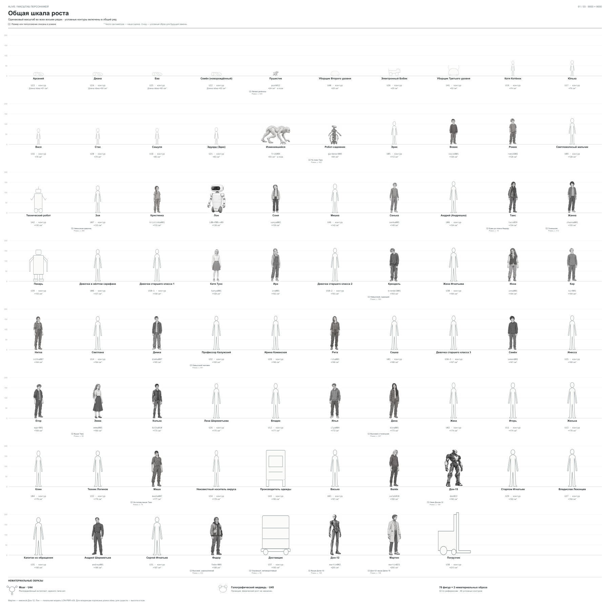

Таис и Федор
Федору она едва-едва доставала до плеча.
Относительное соотношение. В схеме предложены 154 и 188 см; эти числа в цитате отсутствуют.
Три схемы · 78 фигур и 2 нематериальных образа · 9000 × 9000 px
Числа в сантиметрах — рабочие оценки для сопоставления. Значок книги отмечает описание из романа; цитаты и страницы приведены под схемой. Контуры обозначают ещё не разработанные образы, их U-коды сохранены для замены.

Превью · при увеличении загружается оригинал 9K. Перетаскивайте лист мышью или прокручивайте. На телефоне используйте прокрутку и регулятор масштаба.
Численные размеры на схеме — рабочая оценка художника. Значок книги отмечает словесное описание роста, телосложения или относительного размера в романе. Возраст персонажа сам по себе не задаёт рост в сантиметрах. Показана одна выбранная для сравнения версия каждого готового образа.
Федору она едва-едва доставала до плеча.
Относительное соотношение. В схеме предложены 154 и 188 см; эти числа в цитате отсутствуют.
она на целую голову переросла Таис
Высокая относительно Таис, широкоплечая, с длинными крепкими руками. Предложено 177 см.
да и ростом она выше Таис
Прямое сравнение с Таис; предложено 169 см.
высокий, широкоплечий
Словесный габарит и телосложение; предложено 188 см.
Высокая и тоненькая, с прямыми длинными волосами.
Высокий тонкий силуэт; предложено 173 см.
Белокожая, тоненькая, звонкоголосая
Подтверждено тонкое телосложение. 155 см — наша оценка, не заданный рост.
На пороге стоял невысокий, худющий парень.
Невысокий, крайне худой силуэт; предложено 163 см.
невысокой черноволосой девочкой
Невысокая девочка; предложено 133 см. Точный возраст не используется как установленный факт.
Вперед вышел невысокий кареглазый человек
Описание на с. 491, идентификация как Калужского — на с. 492. Предложено 165 см.
Роман, с. 491 / PDF · Роман, с. 492 / PDF
Дон-15 отличался от двенадцатых более низким ростом
Дон-15 должен быть ниже Дона-12. В схеме предложены 182 и 200 см.
Главного робота Дона в этом отделении звали Мартин.
Для именного воспитателя применена рабочая модель класса Дон-12: 200 см. Это вывод по классу и наша размерная оценка, не персональная цифра из романа.
Роман, с. 122 / PDF · Роман, с. 108 / PDF
Они были невысокими — по пояс Таис
Опора привязана к Таис. Предложено 94 см; четыре руки разной длины также прямо описаны в этом абзаце.
огромные, неповоротливые роботы-доставщики
В книге задан общий габарит, но нет точной формы и высоты. Предложены 195 см и широкий тяжёлый корпус.
Детеныш был легкий
Лёгкий детёныш, которого Таис поднимает под живот. 24 см в позе — оценка для схемы, точного размера в этом описании нет.
Для остальных фигур использованы приблизительные размеры по возрасту, роли и предполагаемой статуре. Они не выданы за данные романа. Мишка добавлен по упоминанию на с. 269; его возраст, внешность и рост не определены. Моаг и голографический медведь показаны отдельно, без физического роста.
| Персонаж | Код | Оценка | Основание |
|---|---|---|---|
| Таис | tais059 | ≈154 см | Едва до плеча Федору (с. 19) |
| Эмма | emma005 | ≈169 см | Выше Таис (с. 59) |
| Федор | fedor009 | ≈188 см | Высокий, широкоплечий (с. 233) |
| Колька | kolka010 | ≈170 см | Размер предложен художником |
| Валёк | valek018 | ≈182 см | Размер предложен художником |
| Нитка | nitka007 | ≈164 см | Размер предложен художником |
| Маша | masha007 | ≈177 см | На голову выше Таис (с. 19) |
| Кристинка | kristinka001 | ≈133 см | Размер предложен художником |
| Ромик | romik001 | ≈128 см | Размер предложен художником |
| Вовик | vovik001 | ≈126 см | Размер предложен художником |
| Рита | rita001 | ≈166 см | Размер предложен художником |
| Дина | dina001 | ≈173 см | Высокая и тоненькая (с. 307) |
| Инна | inna001 | ≈164 см | Размер предложен художником |
| Сенька | senka001 | ≈149 см | Размер предложен художником |
| Катя Тунс | katya001 | ≈158 см | Размер предложен художником |
| Илья | ilya004 | ≈172 см | Размер предложен художником |
| Егор | egor001 | ≈169 см | Размер предложен художником |
| Жанна | zhanna001 | ≈155 см | Тоненькая (с. 412) |
| Кир | kir001 | ≈164 см | Размер предложен художником |
| Семён | semen001 | ≈167 см | Размер предложен художником |
| Ира | ira001 | ≈162 см | Размер предложен художником |
| Димка | dimka007 | ≈165 см | Размер предложен художником |
| Соня | sonya002 | ≈139 см | Размер предложен художником |
| Крендель | krendel001 | ≈163 см | Невысокий, худющий (с. 264) |
| Андрей Шереметьев | andrey001 | ≈186 см | Размер предложен художником |
| Мартин | martin021 | ≈200 см | Дон-12: выше Дона-15 (с. 108) |
| Дон-12 | martin002 | ≈200 см | Выше Дона-15 (с. 108) |
| Дон-15 | don022 | ≈182 см | Ниже Донов-12 (с. 108) |
| Лон | LON-PBR-v09 | ≈138 см | Размер предложен художником |
| Робот-садовник | gardener005 | ≈94 см | По пояс Таис (с. 422) |
| Пушистик | push012 | ≈24 см | Лёгкий детёныш (с. 520) |
| Изменившийся | frik004 | ≈93 см | Размер предложен художником |
| Сашка | U01 | ≈166 см | Размер предложен художником |
| Жека | U02 | ≈174 см | Размер предложен художником |
| Васька | U03 | ≈181 см | Размер предложен художником |
| Клин | U04 | ≈176 см | Размер предложен художником |
| Эрик | U05 | ≈112 см | Размер предложен художником |
| Андрей (Андрюшка) | U06 | ≈154 см | Размер предложен художником |
| Зоя | U07 | ≈133 см | Невысокая девочка (с. 269) |
| Девочка в жёлтом сарафане | U08 | ≈157 см | Размер предложен художником |
| Светловолосый мальчик | U09 | ≈128 см | Размер предложен художником |
| Девочка старшего класса 1 | U10-1 | ≈158 см | Размер предложен художником |
| Девочка старшего класса 2 | U10-2 | ≈163 см | Размер предложен художником |
| Девочка старшего класса 3 | U10-3 | ≈167 см | Размер предложен художником |
| Игорь | U11 | ≈174 см | Размер предложен художником |
| Владик | U12 | ≈171 см | Размер предложен художником |
| Женька | U13 | ≈176 см | Размер предложен художником |
| Светлана | U14 | ≈164 см | Размер предложен художником |
| Инесса | U15 | ≈168 см | Размер предложен художником |
| Вася | U16 | ≈78 см | Размер предложен художником |
| Юлька | U17 | ≈76 см | Размер предложен художником |
| Сашуля | U18 | ≈80 см | Размер предложен художником |
| Катя Котёнок | U19 | ≈74 см | Размер предложен художником |
| Стас | U20 | ≈79 см | Размер предложен художником |
| Эдуард (Эдик) | U21 | ≈83 см | Размер предложен художником |
| Семён (новорождённый) | U22 | Длина лёжа ≈52 см | Размер предложен художником |
| Арсений | U23 | Длина лёжа ≈51 см | Размер предложен художником |
| Диана | U24 | Длина лёжа ≈50 см | Размер предложен художником |
| Ева | U25 | Длина лёжа ≈50 см | Размер предложен художником |
| Лиза Шереметьева | U26 | ≈170 см | Размер предложен художником |
| Владислав Лехонцев | U27 | ≈184 см | Размер предложен художником |
| Ирина Команская | U28 | ≈166 см | Размер предложен художником |
| Старпом Игнатьев | U29 | ≈182 см | Размер предложен художником |
| Жена Игнатьева | U30 | ≈164 см | Размер предложен художником |
| Сергей Игнатьев | U31 | ≈187 см | Размер предложен художником |
| Профессор Калужский | U32 | ≈165 см | Невысокий человек (с. 491) |
| Техник Логинов | U33 | ≈176 см | Размер предложен художником |
| Неизвестный носитель вируса | U34 | ≈178 см | Размер предложен художником |
| Капитан из обращения | U35 | ≈185 см | Размер предложен художником |
| Электронный Бобик | U36 | ≈35 см | Размер предложен художником |
| Доставщик | U37 | ≈195 см | Огромный, неповоротливый (с. 56) |
| Погрузчик | U38 | ≈210 см | Размер предложен художником |
| Пекарь | U39 | ≈155 см | Размер предложен художником |
| Уборщик Второго уровня | U40 | ≈25 см | Размер предложен художником |
| Уборщик Третьего уровня | U41 | ≈52 см | Размер предложен художником |
| Технический робот | U42 | ≈130 см | Размер предложен художником |
| Производитель одежды | U43 | ≈180 см | Размер предложен художником |
| Мишка | U46 | ≈142 см | Размер предложен художником |
Нумерация страниц соответствует PDF романа. Ссылки закреплены на версии источника 1d1136a.